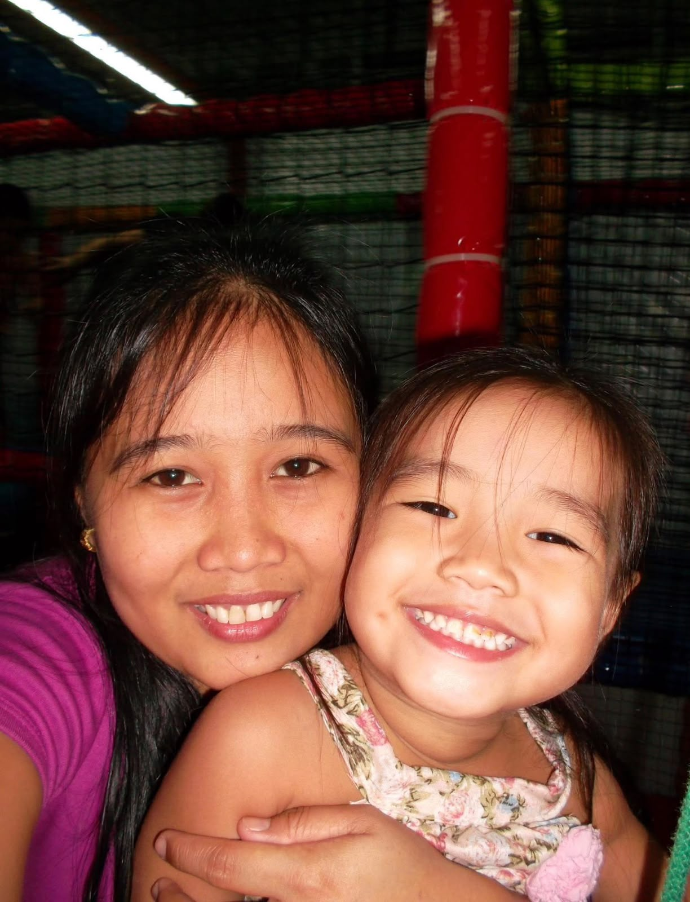

tsapter 1
Mga Alaala Kong Di Malilimutan
Naaalala ko pa noong bata pa lang ako — ikaw yung unang gumigising, bago pa man tumunog ang alarm ko. Ikaw yung naghahanda ng baon ko kahit pagod na pagod ka.
Naaalala ko rin yung mga gabing kinukwentuhan mo ako bago matulog, hawak ang kamay ko hanggang sa antukin ako. Kahit gaano ka kapagod, laging may natitirang oras ka para sa akin.
Ikaw yung unang humalik sa noo ko tuwing may sugat ako, at unang yumakap tuwing umiiyak ako kahit wala namang malaking dahilan. Hindi ko na maisip kung ano sana ang buhay ko kung wala ka.
